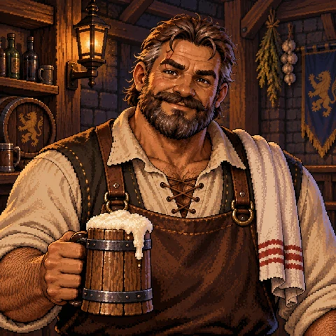
酒場のマスター
ガルド
酒場の依頼板を管理する元冒険者。豪快で面倒見がよく、街の噂はすべて彼の耳に集まる。
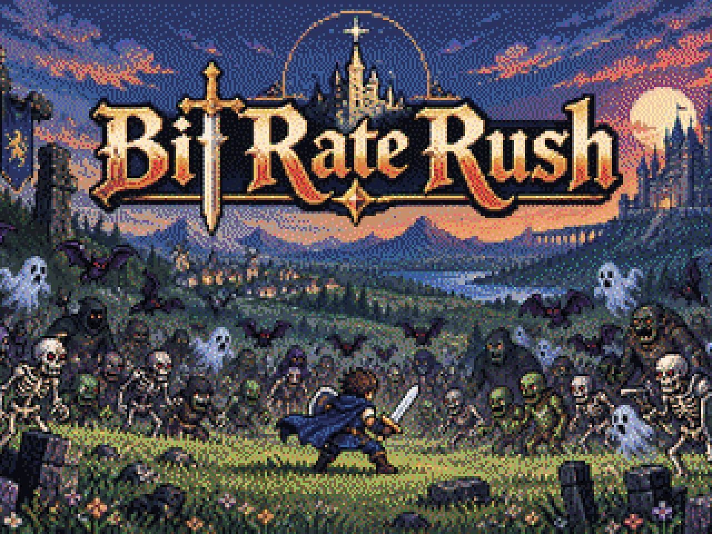
Overview
戦場で必要な操作は、キャラクターの移動だけ。武器は自動で敵を狙い、魔法もひとりでに発動する。 群れの隙間をどう駆け抜けるか。レベルアップでどの武器や能力を伸ばすか。考えることは、その二つだ。 1 回の依頼は 3〜10 分ほど。携帯ゲーム機でも、依頼ひとつから気軽に遊べる。
Story
この世界の生き物は、ビットと呼ばれる光の粒を宿している。魔物が倒れると、ビットは辺りに散り、やがて風に消えていく。人の手で拾い集めることはできない。
この世界には、流れの速さを示すレートがある。レートが上がれば、眠っていた魔物は際限なく目を覚まし、群れとなって街へ押し寄せる。人々はこの異変をラッシュと呼び、その名を口にすることさえ恐れてきた。
今、城下町ルーメンの空を、コウモリの群れが覆いはじめている。
――それは、一人の若者が街の門をくぐった日から始まった。
山向こうの故郷をラッシュに呑まれ、たった一人で城下町ルーメンへたどり着いた若者。手にしているのは、一本のナイフだけ。宿代すら持たない彼は、生きるために酒場の依頼板の前へ立つ。
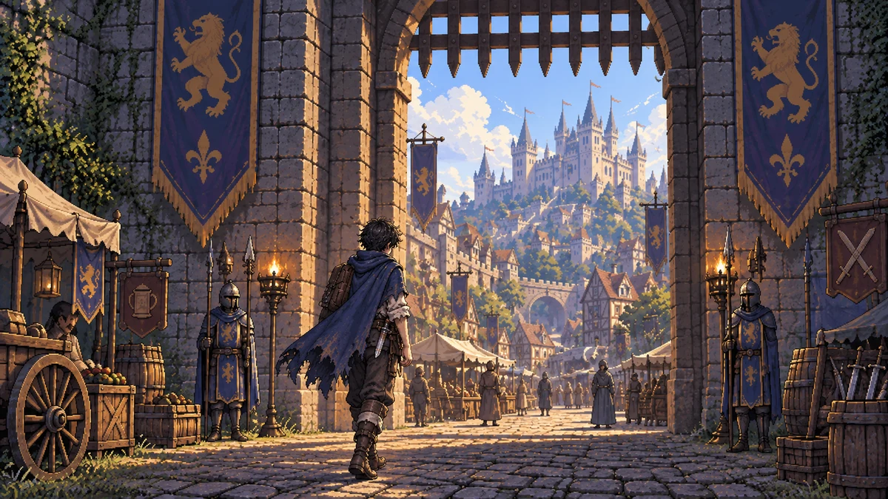
Play
依頼板から、次に挑む仕事を選ぶ。依頼は「制限時間まで生き延びる」と「決められた数の魔物を討伐する」の二種類。マスターが聞かせてくれる噂話が、次の章への手がかりになる。
戦場で拾った硬貨を使い、新しい武器を買ったり、手持ちの武器を強化したりできる。雑貨屋に並ぶのは、薬草や爆弾などの消耗品。戦場へ持ち込めるのは 3 つまでだ。
戦場で受けた傷は、街に帰っても自然には治らない。宿代を払って休めば、体力が回復する。宿屋で日記をつけると、ゲームの進行をセーブできる。
酒場の依頼をすべて終えると、王から特別な任務を託される。見事果たせば、報酬は王家に伝わる魔法。章が進むにつれて、戦場へ同時に持ち込める武器の数も増えていく。
操作するのはキャラクターの移動だけ。倒した魔物から散るビットを集めるとレベルが上がり、3 つの候補から武器や能力の強化を 1 つ選べる。
依頼を達成したら、すぐに街へ帰ってもいいし、戦場に残って硬貨を稼ぎ続けてもいい。ただし、体力が尽きて倒れれば、街へ持ち帰れる硬貨は半分になる。
Weapons
武器は武器屋で手に入れ、魔法は王宮の依頼を果たすことで授けられる。どちらも自動で敵を攻撃するため、狙いをつける必要はない。分身や疾風などの補助能力と組み合わせれば、画面を埋め尽くす攻撃で魔物の群れを押し返せる。
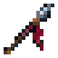
槍長い突きで敵を貫通する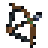
弓扇状に矢を放つ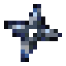
手裏剣広い扇状に飛ぶが、射程は短い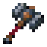
ハンマー振り下ろして衝撃波を残す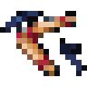
ブーメラン大きく弧を描いて手元に戻る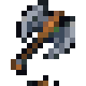
斧山なりに投げ、当たった敵をすべて貫通する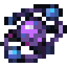
衛星自分の周囲を回って敵を寄せつけない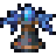
ライトニングタワー避雷針を立て、周囲の敵を感電させる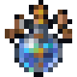
聖水地面にダメージ床を作るCharacters

酒場のマスター
酒場の依頼板を管理する元冒険者。豪快で面倒見がよく、街の噂はすべて彼の耳に集まる。
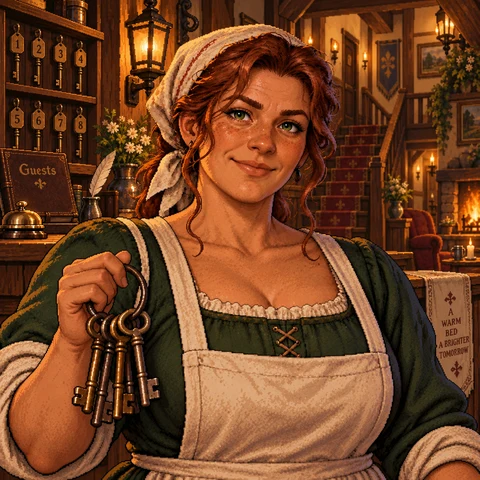
宿屋の女将
世話焼きで、少し口うるさい宿屋の女将。傷だらけで帰ってくる若者を、毎回叱る。
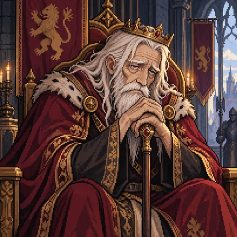
王
前回のラッシュを止めた英雄王。今は玉座から動けない身だが、功績のあった者には王家の魔導具を授ける。
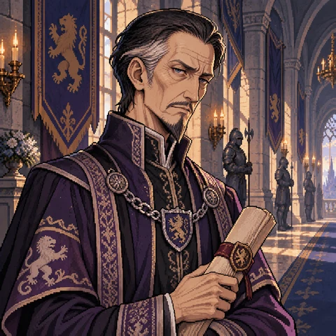
大臣
王宮の取り次ぎ役。素性の知れない若者を、最後まで信用しない。
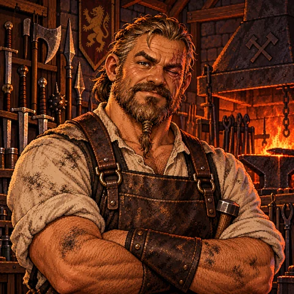
武器屋の親方
無口な職人。金さえ払えば、誰にでも武器を打つ。
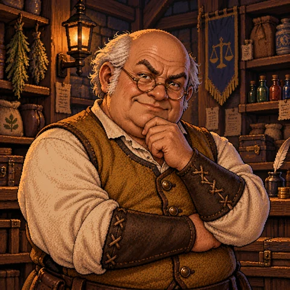
雑貨屋の店主
値段には厳しいが、常連には甘い雑貨屋の店主。薬草や爆弾など、戦場で役立つ品を扱っている。
World
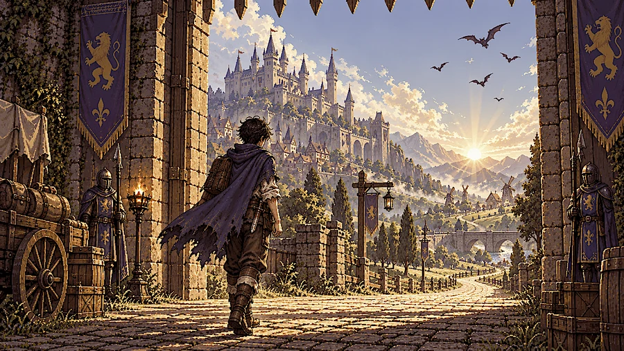
最初の戦場は、城下町のすぐ外に広がる草原。コウモリの群れが空を覆う中、若者はナイフ一本を手に、初めての依頼へ挑む。
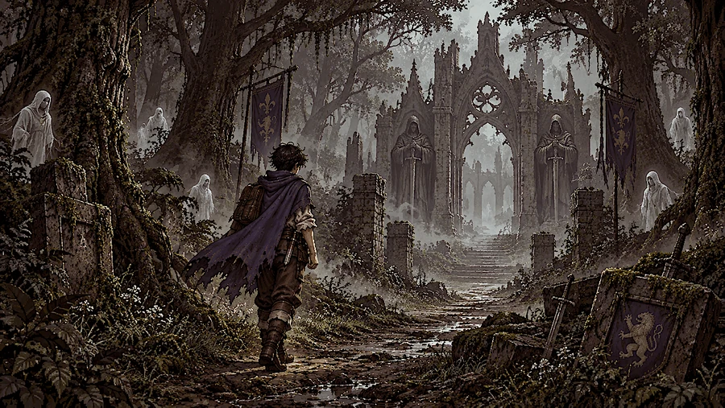
二つ目の戦場は、木こりが帰ってこなくなった森。木々の間を白い影がすり抜け、森の奥には古い「門」があるという噂が流れている。
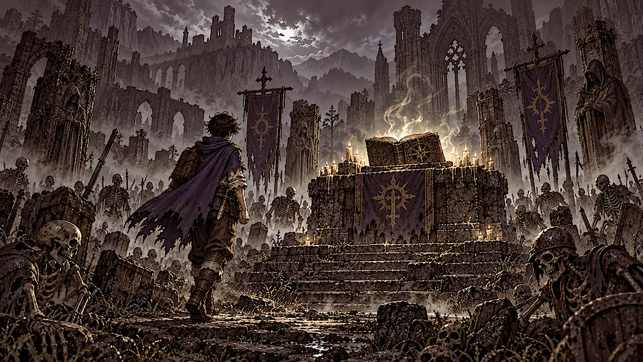
三つ目の戦場は、前回のラッシュで命を落とした兵士たちが眠る谷。街の人々は、この谷の話をしたがらない。
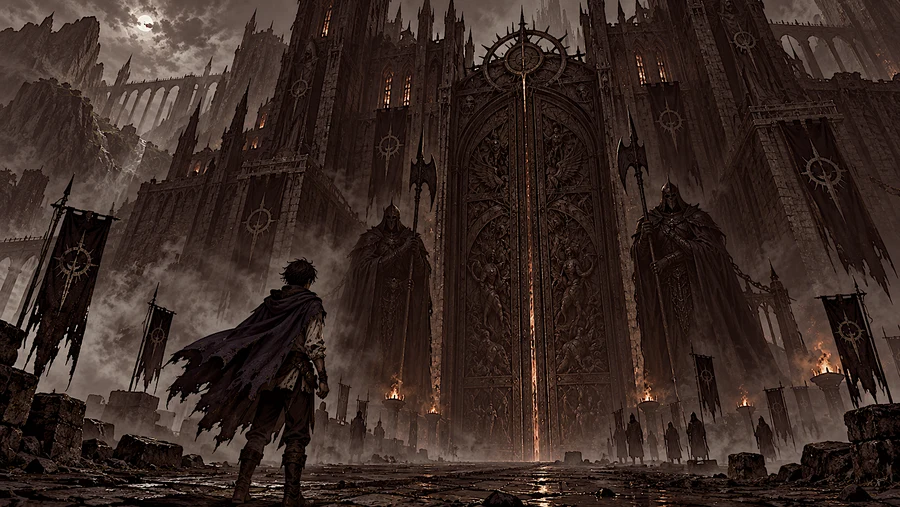
四つ目の戦場は、魔物の城の門前。主人公は門を守る門番と対峙し、王が隠していた真実を知ることになる。
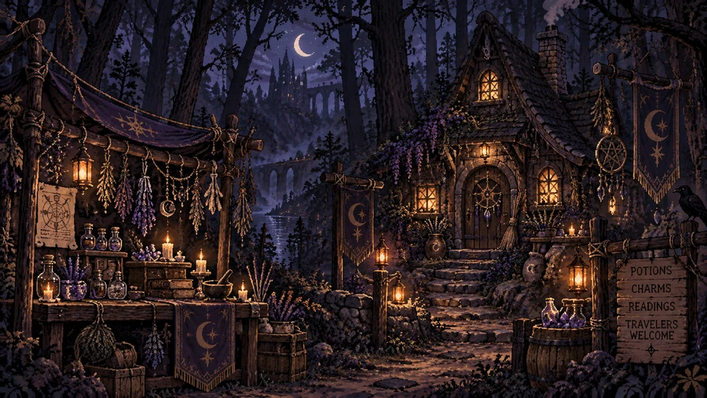
酒場で聞いた噂を追っていくと、森の外れに住む占い師に会える。占い師は主人公にこう告げる。「あんた、影が二つあるように見えるね」
Gallery
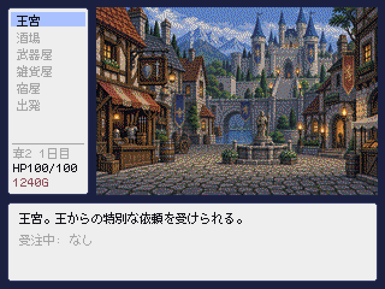
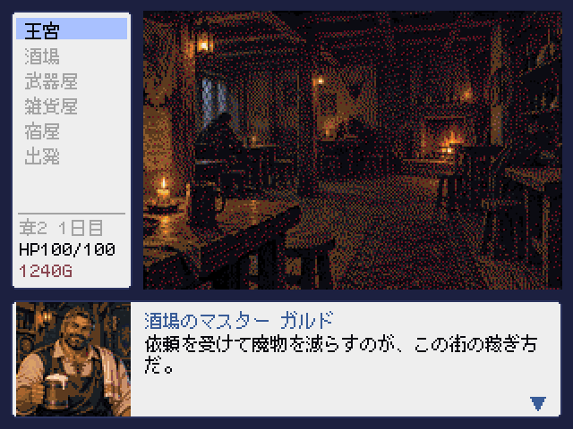
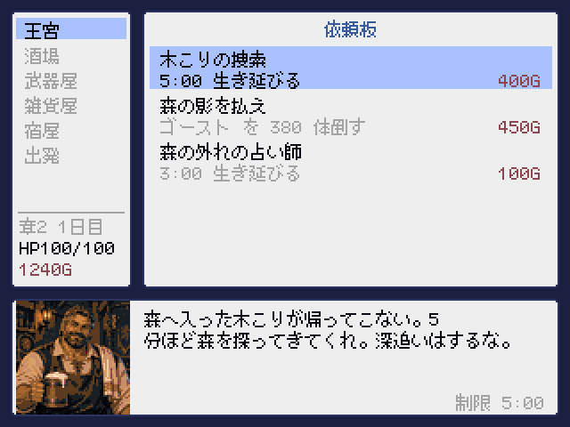
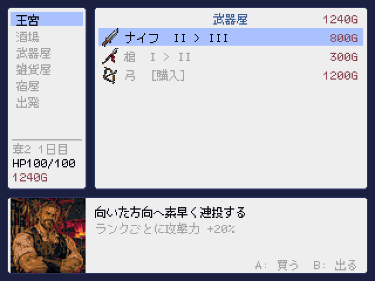
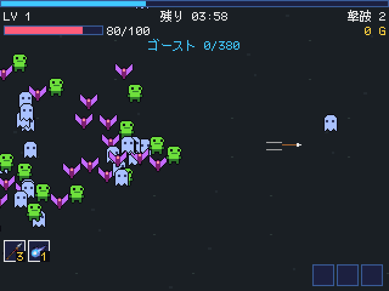
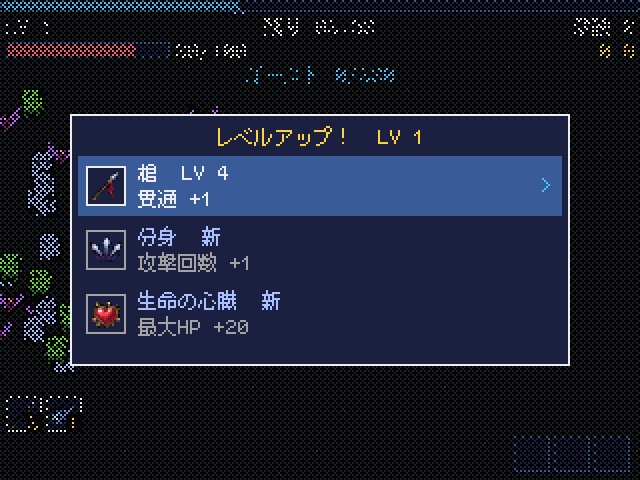
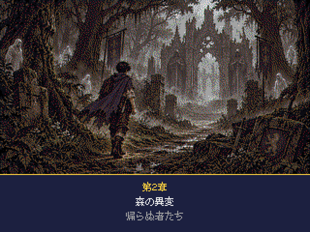
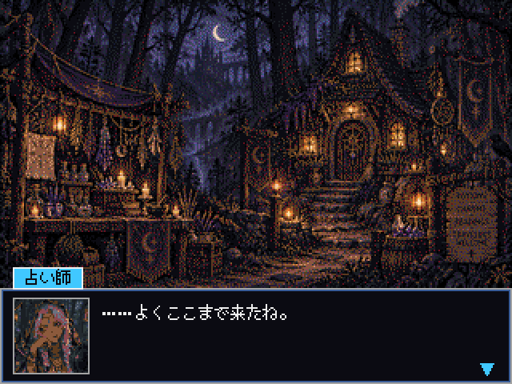
Download
物語の前編にあたる v1.0.0 を無料で公開しています。後編 (アリア編) は v1.1.0 として制作中です。完成後は同じ場所で公開します。
| 必要なもの | Python 3.10 以上と、Pyxel 2.9 以上が必要です。Pyxel は pip install pyxel で導入できます。 |
|---|---|
| 起動 | ダウンロードした .pyxapp は、pyxel play Bit-Rate-Rush.pyxapp で起動できます。ソースコードから起動する場合は python3 main.py を実行してください。 |
| 対応環境 | Windows / macOS / Linux など、Pyxel が動作する環境に対応しています。plumOS 搭載の携帯ゲーム機では、Pyxel の ROM フォルダに .pyxapp を置くと遊べます。 |
| 言語 | 日本語と英語に対応し、オプション画面から切り替えられます。 |
| プレイ時間 | 前編のクリアまで、およそ 60〜90 分です。 |
| 移動 | 十字キー / 左スティック / WASD |
|---|---|
| 決定 / キャンセル | A / B (Z / X) |
| ポーズ・帰還 | START (Esc) |
| アイテム | L / R で選択、Y で使用 |
ゲームの配信や動画投稿はご自由にどうぞ。事前の許可は必要ありません。